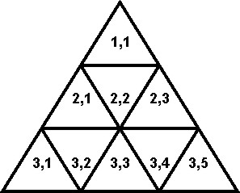
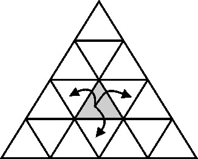

|
| Contest: NOV09 GOLD Division |
|
|
|
|
**********************************************************************
ALTIN SORULAR
**********************************************************************
1'den 3'e Kadar Numaralandirilmis Uc Soru
**********************************************************************
Soru 1: Lambalar [Neal Wu, 2007]
Sarikiz ve diger inekler ahirda bes tas oynarken aniden sigorta atar ve
butun lambalar soner. Sigortayi kaldirdiktan sonra oyuna devam edebilmek
icin, butun lambalarin tekrar acilmasi gerekmektedir.
Ahirda 1'den N'e kadar numaralandirilmis toplam N (1 <= N <= 35) adet
lamba var. Lambalari acip kapatan anaktarlar karisik bir sekilde
M (1 <= M <= 595) adet baglanti ile yapilandirilmislar. Her bir baglanti
iki lambayi birbiri ile iliskilendiriyor. Her bir lambaya bagli bir anahtar
var ve bu anahtar bagli oldugu lambayi ve o lambanin dogrudan bagli oldugu diger
lambalari aciyor veya kapatiyor (acik olanlar kapaniyor, kapali olanlar
aciliyor).
Butun lambalarin tekrar yanmasi icin, en az kac anahtarin kullanilmasi
gerektigini hesaplayiniz. Her zaman en az bir cozum mevcut.
SORUNUN ISMI: lights
GIRDI BICIMI:
* Satir 1: Boslukla ayrilmis iki tamsayi: N ve M.
* Satirlar 2..M+1: Her bir satirda birbiri ile bagli olan iki
lambanin numaralarini temsil eden boslukla ayrilmis iki
tamsayi var. Ayni baglanti iki defa tekrar etmiyor.
ORNEK GIRDI (dosya lights.in):
5 6
1 2
1 3
4 2
3 4
2 5
5 3
GIRDININ ACIKLAMASI:
Bes lamba var. Lamba 1, 4 ve 5 dogrudan lamba 2 ve 3'e bagli.
CIKTI BICIMI:
* Line 1: Butun lambalari yakmak icin kullanilmasi gereken en az
anahtar sayisini gosteren tek bir tamsayi.
ORNEK CIKTI (dosya lights.out):
3
CIKTININ ACIKLAMASI:
1, 4 ve 5 numarali anahtarlarin kullanilmasi gerekir.
**********************************************************************
Soru 2: Kurabiyeleri Kim Getirecek? [Ye Wang, 2009]
Ali Baba'nin 1'den N'e kadar numaralandirilmis N (1 <= N <= 1,000)
adet inegi kendi aralarinda M (1 <= M <= 100) adet calisma grubu
olusturdular. G_i grubunda S_i (2 <= S_i <= 19) adet inek
(G_i1, G_i2, ...) var. Bir inek birden cok gruba katilabilir.
Her bir grup, grubun biskuilerini getirecek bir inek belirleyecek.
Eger bir inek c_1, c_2,..., c_K inekten olusan gruplara dahil ise
en fazla ceil(1/c_1 + 1/c_2 + ... + 1/c_K) adet grubun kurabiyesini
getirmekle gorevli olabilir. (ceil (tavan) fonksiyonu bir reel sayiya
en yakin ve o reel sayidan kucuk olmayan tamsayiyi dondurur.)
Her bir grubun kurabiyesini hangi inegin getirecegini bulunuz. Eger
boyle bir inek bulunamazsa o grup icin '-1' yazdiriniz.
SORUNUN ISMI: cookie
GIRDI BICIMI:
* Satir 1: Boslukla ayrilmis iki tamsayi: N ve M
* Satirlar 2..M+1: Satir i+1 boslukla ayrilmis bir cok tamsayi
icerir: S_i, G_i1, G_i2, ...
ORNEK GIRDI (dosya cookie.in):
5 6
3 2 4 5
2 1 3
3 1 2 3
1 1
2 2 5
3 2 3 4
CIKTININ ACIKLAMASI:
Inek1 en fazla 2 grup icin biskui getirebilir, inek2 de 2 grup, inek3
2 grup, inek4 1 grup ve inek5 1 grup.
CIKTI BICIMI:
* Satirlar 1..M: Satir i, grup i icin hangi inegin kurabiye getirecegini
gosteren tek bir tamsayi iceriyor. Eger boyle bir inek yoksa '-1'.
ORNEK CIKTI (dosya cookie.out):
5
1
3
1
2
4
**********************************************************************
Soru 3: Inek Sarikiz'i Kurtarma [Ye Wang, 2009]
Sarikiz ucgenlerden olusan bir labirentte mahsur kalir. Bu labiren
N sira (1 <= N <=1,000,000) ucgenden olusuyor. Asagida bir ornegini
gorebilirsiniz.

Labirentin i'inci sirasinda 2*i-1 adet ucgen bulunuyor. Soldan saga
dogru (i,1), (i,2), vs. seklinde numaralandiriliyor.
Sarikiz bulundugu ucgenden bu ucgenle ayni kenari paylasan komsu ucgenlere
gecebilir. Ornegin (3, 3) numarali ucgenden 3, 2), (3, 4) ve (4, 4)
numarali ucgenlere gecilebilinir. Bir ucgenden komsu ucgene gecmek icin
bir dakika gerekiyor.

Labirentte M adet (1 <= M <= 10,000) cikis ucgeni var. Sarikiz bu cikis
ucgenlerinden herhangi birinden labirenti terkedebilir. Bir cikis
ucgeninden cikmak icin de bir dakika gerekiyor.
Sarikizin bu labirenti en az ne kadar T suresinde terkedebilecegini ve
hangi cikis ucgenini (OUTi, OUTj) kullanmasi gerektigini bulunuz. Eger
T suresinde birden cok cikis ucgeninden labirenti terketmek mumkunse,
sira (satir) numarasi en kucuk olan cikis ucgenini yazdiriniz. Eger bu
sekilde birden cok ucgen varsa, sutun numarasi en kucuk olan ucgeni yazdiriniz.
SORUNUN ISMI: rescue
GIRDI BICIMI:
* Satir 1: Boslukla ayrilmis iki tamsayi: N ve M
* Satir 2: Boslukla ayrilmis iki tamsayi: Si ve Sj
* Satirlar 3..M+2: Satir i+2, i'inci cikis ucgeninin konumunu gosteren boslukla
ayrilmis iki tamsayi iceriyor: Ei ve Ej
ORNEK GIRDI (dosya rescue.in):
4 2
2 1
3 5
4 4
CIKTI BICIMI:
* Satir 1: Boslukla ayrilmis iki tamsayi: OUTi ve OUTj
* Satir 2: Tek bir tamsayi: T
ORNEK CIKTI (dosya rescue.out):
4 4
4
**********************************************************************
Translation by Osman AY